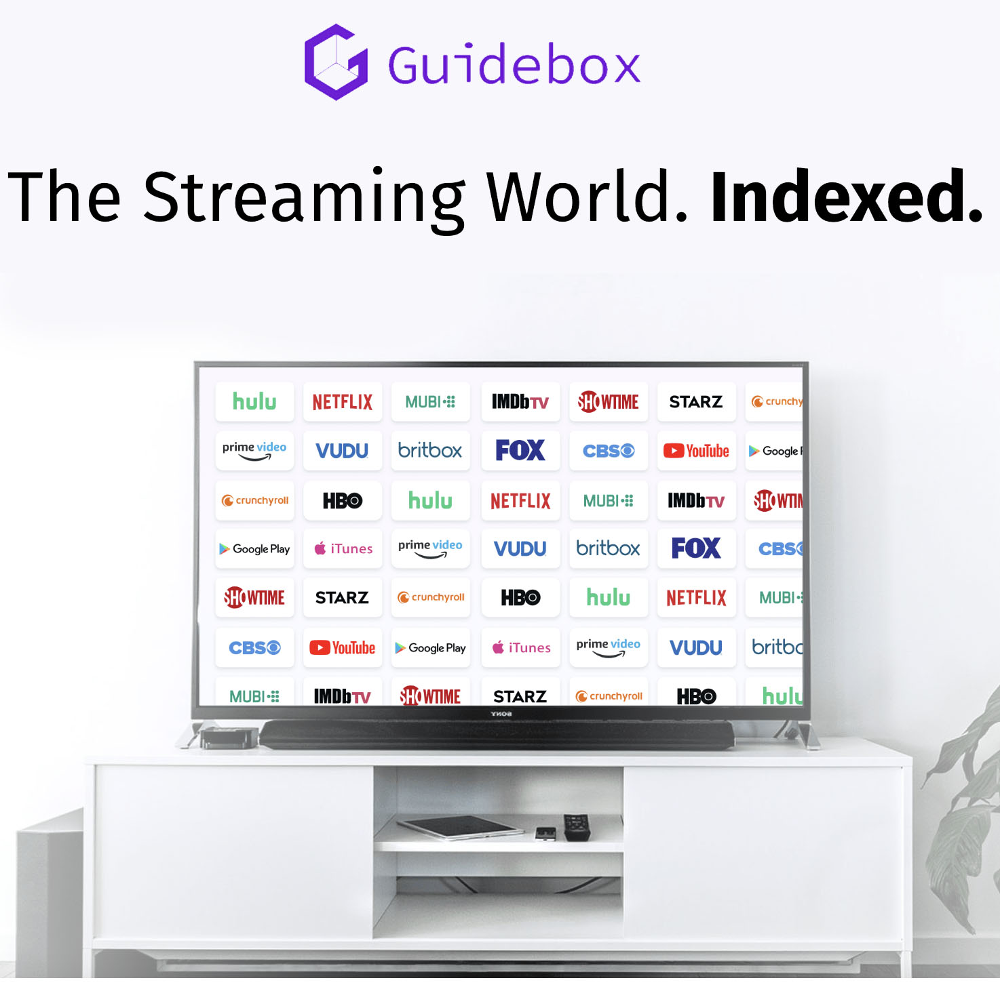

Tools and Technologies
Team Name: THUR Assignment 3 Group #25
The Vision for ‘Downstream’ does not come short of requirements for Tools and Technologies required as elaborated in the sections to come. The application would function as a form of ‘Single Sign On’ (SSO) for multiple streaming services in order to condense the number of applications needed to access streaming services, however still routing traffic from Downstream to the relevant Streaming Service in order to watch the users content that they have subscribed to.
Downstream would be either a downloadable app, which would be through the Downstream page for their relevant OS – or a Web Application. After installing and opening the application, the user would be greeted with the login and Sign up page – to which the user would make an account, then the user is greeted with the multiple streaming services supported by Downstream. The user would then sign onto the streaming services that they are subscribed to through the API. This would be either an in-app browser experience redirecting them back to downstream, or would be routed through the users default browser. Logging into the streaming service, would generate a unique API Keycode to their Downstream account via Open Source Authentication (OAuth), linking the streaming service to Downstream – enabling the relevant streaming services’ library to the user. If the user looks up a Movie or TV show, and their subscribed services don’t have the content – the movie or tv show will show the relevant streaming service that does have their requested content as populated by the central SQL database in Downstream’s server, and deem the content unavailable unless the user wants to subscribe to the service.
Tools
As we anticipate ‘Downstream’ to be predominantly an independent app experience first before coming to web application, we would be relying on a line of Independent Developer Environments (IDE’s) – in order to achieve a multi-platform reach across different operating environments. These IDE’s would need to work with code that can be used on multiple platforms as efficiently as possible, while also being able to have the dependencies that each OS requires of Network Enabled applications – in order for the Application Programming Interface (API) of said streaming services to be able to communicate with the relevant streaming service servers.

For Apple devices, the IDE XCode would allow for development on their range of apple devices using either C or Swift Programming languages, Swift allowing for more flexible Adaptation to branch out to tvOS, iOS as well as MacOS for both Intel and ARM based optimisation. XCode would by default also make the application abide by App Store Requirements and MacOS Security requirements without having to alter settings. For Linux and Windows, they both are able to use the IDE Visual Studio, however windows would likely require the dependency of Net. Framework – which is likely already installed on the users PC due to common programs such as Steam requiring the tool, however a check would still be in place for the dependency. For Developing the Web Application however, the IDE will differ – the choice of something as simple as Atom, or as complex as Adobe Dreamweaver, which visually allows for easier viewing of your final product would be used for Web Development – likely using a combination of HTML and Javascript for visually pleasing interactivity.
In terms of Hardware requirements for running Downstream servers – as the service would not legally be allowed to host the content of the multiple streaming services, the space requirements of the system required to run Downstream would not be as hefty as what may be required for one of the streaming services alone. For scale, a bare minimum for what can only be assumed as basic requirements for Netflix Original shows alone – a rack of 36x100TB drives in a file/database server would have been deployed with Netflix Servers in order to host and play the content for the millions of users worldwide. A small portion of this would be flash storage, which is said to be 360TB which would be for content deemed popular, according to a server holder of Netflix OpenConnect. The requirements that Downstream would be maintaining - would not exceed half of Netflix’s requirements at early stages. (Keck, C 2021)
The Space requirements for Downstream can be as minimal as a rackmount solution with options for deploying extra servers. The primary focus of the servers needing to be deployed with Downstream, would involve being able to run a database for the relevant streaming services and populating the SQL database, in order to not be entirely dependent on the API in the event the search functionality of the API stops getting support. The server would also need to run a form of Authorization Server and a Web Server for the Web Application - which would need to have sufficient security as well as Backups, which could be implemented with the 3-2-1 Methodology when looking at hosting the servers Onsite. One Primary and 2 Backups, on Two Different Backup Mediums, one being off site in the event of lost data. RAM Requirements generally need to meet a minimum of 4GB for a bare minimum database – however assuming high traffic within the application, a more sizable amount would be required. Assuming no further Video Content would be hosted with Downstream – if the database, webpage and Authentication dependencies reached 50TB later on down the track, 16-32GB of ram would be sufficient – paired a multicore server specialised CPU such as the Intel Xeon Platinum 8362 (Intel, 2022) going beyond the 4-core required minimum for a database server, in the event of futureproofing. These specifications go beyond the minimum requirements for SQL Servers such as MySQL and Microsoft SQL Server 2019. The costs involved with running an onsite server can be compared to if the server was hosted on AWS – which allows you to access a backup server – however can go as much as USD$12,000 a month if matching the specifications mentioned above in an AWS SQL Server alone as per the AWS Pricing Calculator. (Amazon Web Server, 2022)
Technologies
For the ‘Downstream’ apps development, a range of IDE’s and API’s would be required in order for the application to be able to communicate with Downstream. As part of the API’s authentication measures that would be needed to communicate with Downstream, the Authorization method of OAuth would be used to create a secure link between the relevant streaming services. Each streaming service can rely on either one API that covers a range, but for those API’s that don’t hold popular support by unofficial solutions, would then rely on a separate API – that would hold the same end result.
As part of the required implemented technologies for Downstream. Alongside IDE’s – the application would require API’s as part of the code – so that the application is able to communicate with the streaming platform, it will allow the user to login with their subscription to gain access to their subscribed content and that the user will then access their available content. Using the API for a range of streaming services GuideBox for example, it allows for an Access Token to be generated between the service and Downstream, and a range of localization features – which would be populated against the downstream login so Downstream is able to populate the correct libraries, as globally the libraries differ. The link between the two streaming services, API’s commonly use OAuth2 as the authentication measure of choice – which is commonly used as the Sign On Authentication measure used by Google and Microsoft for their relevant accounts. OAuth2 allows Downstream to request permissions from the streaming service, and the streaming service in turn to generate an Access Token – giving the requesting application permission to access their subscribed to content, which would then be listed on their account. Any Streaming service that doesn’t have an Access Token listed against the name will appear, but the content will be deemed unavailable to the user – and will prompt the user to log in.
For majority of streaming services, there are more commonly unofficial API’s which allow for broader access to many Streaming Services – Netflix was the most recent to close their publicly accessible API in 2012, which would have allowed for easier access to their library with direct support from Netflix, however this would then be worked around by unofficial developers. The official API had more access to Netflix’s library “the API originally provided third-party developers a way to access and point to content that users could get from Netflix'' and would link directly to the content rather than have a browser work around. (Lawler, R, 2014) As the application allows for broader support, there will likely be multiple API’s implemented into Downstream – however for the launch it will be centred around GuideBox.
The API’s are able to be implemented in either solution through multiple forms of code, as it requires base files on the Downstream Servers end to adapt. This then would allow for Python implementation into a Downloadable application, or Javascript Implementation for a web application. However the applications would require a different IDE, as Linux and Apple both have different dependencies needed in order for the application to run – therefore would need to be programmed accounting for OS differences. All three Windows, MacOS and Linus would require the dependency of Net. Framework as part of the development – as it is Client and Server based, the client being the application connecting to the Downstream Servers. The only exception to dependencies, would be for the Web Application – as current browsers already have these dependencies built in, as standard with the HTML5 Standard since Adobe Flash was phased out back in 2020 (Adobe, 2020)
To populate the search results however, as Downstream will eventually rely on multiple API’s for multiple streaming services as support gets bigger – the use of servers is crucial, not only for Account information – but for the information populated by the streaming services. Using the API GuideBox for a range of streaming services ranging from Amazon Prime Video to Netflix, the creator of the unofficial API have already populated a global catalogue, which can be populated into an SQL Table using Python. This can be set to check periodically to populate a SQL Table using the GuideBox API, as the information in GuideBox would already have the categories sorted and prepopulated by the developers. Populating into a new database would lessen the dependency, in the event of GuideBox losing support and having to revert to a new API – given how there is no publicly accessible Official API for the paid streaming services.
For the Applications UI and coding experience, the programmers would have sufficient experience with Swift, C and Python. C would allow for the most open accessibility towards Windows and Linux Operating systems – as swift is primarily focused around the Apple Ecosystem. Swift would allow for Apple development within XCode, in order to more easily be optimised for MacOS, tvOS and iOS for all apple devices and Python to be used primarily for Database related tasks on the backend implementing an SQL Integration service. There will also be preference for developers to be experienced with SQL in order for search functionality to work within Downstream. If the Streaming service has an Access Token linked against the account, the content on the subscription service would then be deemed available for that streaming services library – otherwise it will prompt for the user to login to the account if they have an account with the service. For the web application, nothing more than code with HTML5, CSS and Javascript would be required – as code would be referring to content already hosted on Downstream Servers with no dependencies required, unlike the downloadable application.
References
- Keck, K 2021, A look under the hood of the most successful streaming service on the planet, Viewed 19th May 2022, https://www.theverge.com/22787426/netflix-cdn-open-connect
- Amazon Web Server, 2022, AWS Pricing Calculator, Viewed 19th May 2022, https://calculator.aws/#/
- Intel, 2022, Intel® Xeon® Platinum 8362 Processor, Viewed 17th May 2022, https://www.intel.com.au/content/www/au/en/products/sku/217216/intel-xeon-platinum-8362-processor-48m-cache-2-80-ghz/specifications.html
- Lawler, R, 2014, Netflix Will Shut Down Public API Support For Third-Party Developers On November 14, Viewed 19th May 2022, https://techcrunch.com/2014/06/13/netflix-api-shutdown/?_ga=2.220147738.265095288.1652966565-2074864151.1652966565
- Adobe, 2020, Adobe Flash Player End Of Life, Viewed 19th May 2022, https://www.adobe.com/products/flashplayer/end-of-life.html